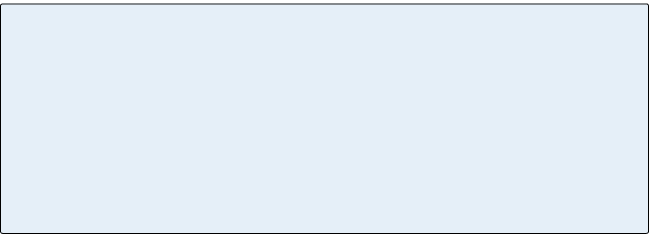
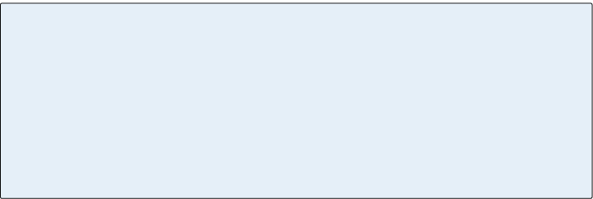

-
Chapter 14
Expression
Marks
Expression marks provide extra information about the way a passage is to be played. Composers before the late 18th century made sparing use of expression marks, depending instead on the musicians’ knowledge of prevailing style. Nonetheless, editors often add them to older pieces as suggestions for the performer. Although modern composers often provide very specific performance instructions, interpretation still will vary
with each performer.
John Carbon, Love Letters from the Lost Cause (2012)
Modern compositions often include both traditional and
non-traditional performance instructions.204
Section 1
Dynamics and Articulation Markings
Dynamics
The term dynamics Dynamics A term encompassing all of the various performance indications that concern volume. Dynamics are indicated by
the abbreviations of the Italian words pianissimo, piano, mezzo-piano, mezzo-forte, forte, fortissimo:
pp, p, mp, mf, f, ff. encompasses all of the various indications that concern loudness. Dynamic markings are easy to understand once you know that forte means “loud” and piano means “soft.” Just remember that our keyboard instrument called the “piano” got its name from being able to play both soft and loud (piano is short for pianoforte). Forte is abbreviated f and piano is abbreviated p.All the other dynamic markings are built from these:
ff (fortissimo, or very loud), mf (mezzo-forte, or moderately loud), mp (mezzo-piano, or moderately quiet), and
pp (pianissimo, or very quiet).Sometimes you’ll see further extremes like fff or ppp, but it doesn’t make much sense to keep on adding f’s and p’s beyond three. Aaron Copland once wrote ppppp under a very high note written for flute, but perhaps he was just making a little joke (it’s very difficult to play a high note quietly on a flute).
Crescendo And Decrescendo
A crescendo (a gradual increase in volume) can be indicated
by either the abbreviation, “cresc.” or by a wedge that expands
to the right. Decrescendo is the opposite. You may also see the words diminuendo (diminishing) or morendo (dying away)
used for a decrescendo.Figure 14.1 Dynamic markings
Figure 14.2 Crescendo and decrescendo markings
205
In Movie 14.1, the string section is following Tchaikovsky’s performance indication to play pizzicato, which means to pluck the string with one’s finger.
A composer can indicate a sudden rather than gradual increase or decrease in volume by adding the word subito (sudden) to a dynamic marking. Similarly, the dynamic marking fp on a single note tells the performer to attack the note forte but immediately drop the volume to piano.
Signs Affecting Articulation
In addition to observing the dynamic markings, a performer must consider how to articulate the notes within a phrase. Should the notes be played very smoothly and joined together, or should they be detached from one another? Should one note be played with more emphasis than another, or held longer or shorter than its written value? These performance considerations are indicated by various articulation Articulation Refers to the manner in which notes are joined together and how they’re attacked.
A group of notes may be connected by a slur mark, in which case there’s no space whatsoever between them,
or they may be marked staccato, which tells the performer that the notes are to be separated from one another by “air.” Articulation markings are used to specify how long or short an unslurred note is to be played: the wedge is
for an extremely short note and a tenuto mark tells the performer to hold out the note as long as possible (without actually joining it to the next note).
An accent or sforzando mark instructs the performer to play the note with a strong attack. markings found in the score.Movie 14.1 Crescendo and decrescendo (Tchaikovsky, Scherzo, Symphony No. 4)
206
Staccato And Tenuto
The staccato sign is a dot placed below the note head, or
above it if the stem is downward. It tells the musician to
play this note clearly separated from the next one. Often this
is misinterpreted to mean that a staccato note should be as short as possible, but really it just means to put a little “air” between the notes – as if there were a rest between them.
In usual practice, a staccato mark reduces the length of the
note by about half, adding a rest (a quarter note becomes
an eighth followed by an eighth note rest). The amount of separation necessary depends on the tempo and mood of
the music; ultimately it’s a matter of taste.In the 18th century, the wedge was used to
indicate a very short and emphatic staccato.
The wedge is still used today for notes that
are to be played extremely short.The opposite of staccato is tenuto, which
just means “held out.” The tenuto sign is a horizontal line, written in the same place as the staccato sign. Often it carries an additional meaning of a certain emphasis to be given the marked notes.Movie 14.2 Using staccato marks to simplify notation
Movie 14.3 Comparing staccato and tenuto
Figure 14.3
The wedge207
Sometimes you’ll find the tenuto and the staccato marking combined,
which tells the performer that the notes are both emphasized and separated (but not necessarily very short). The interpretation will depend partly on the particular passage.Slurs And Phrasing Marks
The slur looks like the tie, except that it connects two or more notes of different pitch. The effect is to make the notes legato, or smoothly joined together. A violinist will avoid lifting the bow between slurred notes; a singer or a performer on a wind instrument will do them in a continuous breath. On the piano, legato notes are joined by holding the first one until the next one begins. Slurs are used to connect anywhere from two notes to an entire phrase. In the example below, the two-note slurs add variety and emphasis to the long passage of sixteenth notes.
Figure 14.4 Long and short note markings
Movie 14.4 Slurs (C.P.E. Bach, Allegro, Sonata in A minor for Solo Flute)
208
A phrase mark looks like a very long slur, except that you aren’t really expected to play all the notes within it slurred together:
the mark only suggests that these notes should be thought of as part of the same musical idea. The end of a phrase is often marked
by the “taking of a breath”: a drop in loudness, a short rest, or even a very slight pause in the counting of time. If you see a phrase mark in a classical work from the time of Mozart and Beethoven, it’s probably an editorial suggestion – composers of that era generally left phrasing up to the performer. Even today performers will find their own ways of phrasing a piece unless the
composer’s intentions are unequivocal. A phrase mark is used in Movie 14.5 to connect the slurred groups of two.Movie 14.5 A phrase marking combined with slurs (Brahms, Intermezzo op. 118 No. 2)
Movie 14.6 Accent marks (Brahms, Allegretto, Symphony No. 2)
Accent
An accent mark is a short horizontal wedge over a note head, meaning that the note should be played forcefully (with a strong attack). Another way to indicate the same thing is the sign sf, which stands for sforzando, meaning “forcing.” The accents produce syncopation in this example from Brahms:
209
Review 14.1
1. The expressive signs provide information that often would be provided by the interpretive skill of the performer. They’re generally used only when a composer wants to ensure that the performer will
play a passage in a certain way.2. Dynamics are indicated by the abbreviations of
the Italian words pianissimo, piano, mezzopiano, mezzoforte, forte, fortissimo: pp, p, mp, mf, f, ff.3. Gradually increasing loudness, or crescendo, is indicated by the abbreviation cresc. or by the sign below. Decrescendo, diminuendo, and morendo
are all words for decreasing loudness, as is the
sign below.4. The staccato sign indicates that a note is to be clearly separated from the following note. This generally has the effect of making the note sound short. The sign for staccato is a dot placed above or below a note head, depending on the stem direction. The wedge is also placed above or below the note head, and can
be used to indicate an exaggerated staccato.5. The tenuto sign, a short line placed above or below the note head, indicates that the note should be held out as long as possible (but without actually joining
it to the next note).6. The accent mark means that a note is to be played with a strong attack.
7. The slur looks like a tie except that it connects two
or more notes of different pitch. Slurred notes are played smoothly joined together.8. A phrase mark looks like a very long slur; it shows
the unity of a musical idea. It does not necessarily mean that all the notes under it are smoothly joined, just that they belong together.decrescendo
crescendo
210
Section 2
Tempo Markings
The speed, or tempo Tempo The pace of a given piece. A tempo marking is usually indicated at the beginning of a piece, generally with
an Italian word such as allegro (fast), adagio (slow), etc. Many Italian words used to indicate tempo also convey information about the piece’s mood: an adagio is slow and sad, for example. , of a piece is traditionally indicated in Italian using such terms as allegro (fast), andante (walking), adagio (slow), and so on. Many of these terms have colorings
to their meaning that go beyond mere speed of execution, however. For example, adagio is not only slow but sad, whereas maestoso is slow but stately and positive. Sometimes a certain musical effect or figure is associated with a tempo indication: maestoso will often feature dotted rhythms implying a ceremonial procession, whereas andante often involves steady (“walking”) eighth notes in the bass. Allegro is frequently not only fast but joyful, positive, or even heroic, whereas presto is fast and just exciting, sometimes in a lighter mood.Below are the most common of the tempo indications which
often appear in combination with an added instruction such
as ma non troppo meaning “but not too much,” or molto meaning “very.”Composers since the time of Beethoven often add a metronome mark as well. The metronome is a precise measure of beats
per minute but lacks the emotional associations mentioned above. Metronome rates are measured as ticks per minute;
a marking of ♩= 50 means fifty quarter notes to the minute. Sometimes the mark is labeled M.M. (Maelzel Metronome), after the inventor.Figure 14.5 Common tempo markings
211
Accelerando And Ritardando
The tempo of a piece does not always remain constant.
The Italian term accelerando is used to indicate a gradual acceleration of the tempo. A gradual slowing of the tempo
is called a ritardando, abbreviated rit. or ritard. The term rallentando is also used to slow the tempo. A tempo indicates
an immediate return to the original tempo, as does tempo primo.Fermata
A fermata Fermata A symbol that extends the duration of a note or rest beyond its normal value. The exact duration of the note is up to the performer. A fermata makes a dramatic pause and can occur anywhere in the music. extends the duration of a note or rest beyond
its normal value. It means that time is suspended – the exact duration of the note is up to the performer. A fermata makes
a dramatic pause and can occur anywhere in the music.Figure 14.6
A fermataSuggested Practica Musica Activities 14.1
• Performance Marks: Choose the performance mark shown in each music example.

Common Italian Musical Terms
Accelerando Accelerating
Ad libitum at will. Abbr. ad lib
Andante Walking speed
Al fine To the end
Arco With the bow (see pizzicato)
A piacere Rhythmically free
Assai Very
A tempo Return to previous tempo
Brio Brilliance
Cantabile Singing
Con with, e.g., Allegro con brio
Crescendo Getting louder
Da capo Repeat from the beginning. Abbr. D.C.
Dal segno Repeat from the sign. Abbr. D.S.
Diminuendo Diminishing volume
Due Two
-issimo Suffix meaning “very much”, e.g., fortissimo
Largo Very slow
Legato Connected, smooth
212
Lento Slow
L’istesso tempo The same tempo
Ma but, e.g., Allegro ma non troppo
Maestoso Majestically
Marcato Stressed
Meno Less, e.g., meno mosso
Moderato Moderately
Molto Very much, e.g., Molto allegro
Mosso Motion
Non Not
Pizzicato Plucked. Abbr. pizz.
Più More, e.g. più mosso
Poco A little
Rallentando Gradually slowing
Ritardando Slowing
Secco Dry
Segue Continue in the same way
Sempre Always
Senza Without
Simile Similarly
Sostenuto Sustained
Sotto Below, under
Subito Suddenly
Tacet Silence
Tanto Much
Tenuto Full time value, sustained
Tre Three
Troppo Too much
Tutti All together, contrasts with “solo”
Vivace Lively
Voce Voice, e.g. sotto voce, “hushed voice”
213
Review 14.2
1. Tempo is usually indicated at the beginning of a piece, generally with an Italian word such as
allegro (fast), adagio (slow), etc.2. Sometimes composers add the more precise metronome mark, such as ♩= 60, which would
mean 60 quarter notes to the minute.3. Expressive indications are usually written in
Italian, which has long been the international language for music notation.